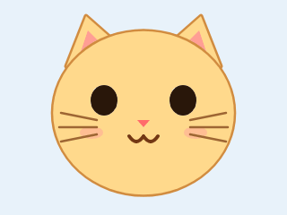
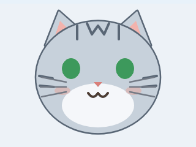
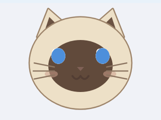
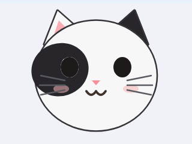
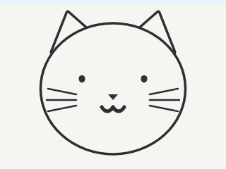

均为 idle 态动画(呼吸 + 眨眼),320×240 真机尺寸。选定后按该风格生成全套状态(idle / talking / sleep / error / thinking)。

现行款精修:暖橘被毛、粉色耳内、圆润大眼。和现在的脸几乎一致,作为对照基线。

银灰被毛 + 额头 M 纹 + 脸颊条纹,琥珀色眼睛。就是美短的样子。

奶油身体 + 深棕面罩和耳内,蓝眼睛。对比最强,老远就认得出。

白底 + 黑色左眼罩斑块 + 黑右耳,粉鼻子。最有性格的一只。

不上色,粗描边 + 豆豆眼。配白底最干净,但表情表现力最弱。